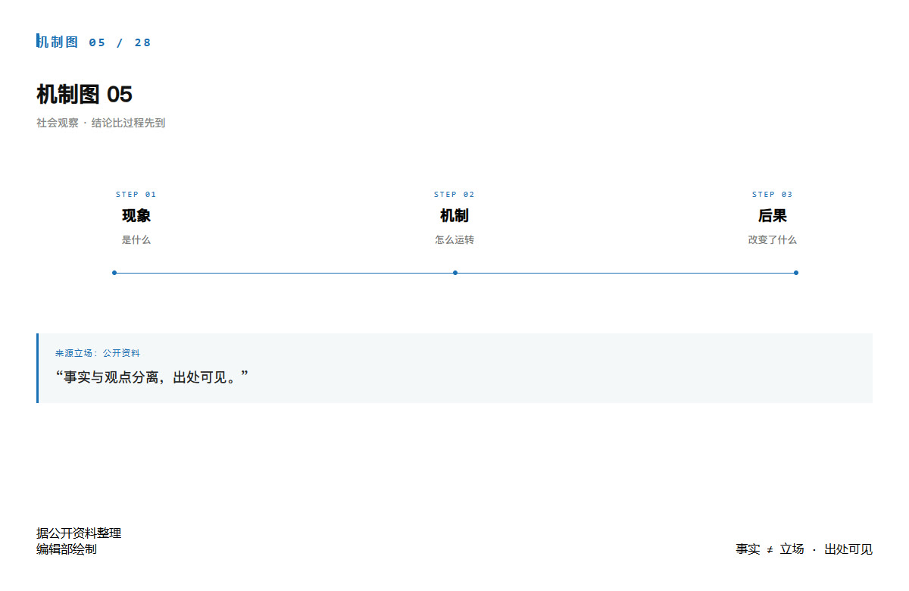

舆论以小时计，程序以年计
社会观察 · 结论比过程先到
一篇长文发出去，几个小时，定性就完成了。几年后，一纸判决送到，潦草地躺在角落里，没人点开。两个时间点之间隔着一个人被改掉的生活。
下面只用公开报道里的时间线，具体指控一个字不转述、不评价，个案的是非以司法结论为准。能看的只有结构：一套系统算小时，另一套算年，它们并排跑的时候出了什么。
你以为「反转」就完了。可反转只是把结论换了个方向，它追不上已经执行完的后果——工作没了，关系断了，搜索结果钉在原处。这些不会因为一纸文书自动倒带。
一条是叙事的：单方陈述发布，情绪动员，转发扩散，冲上平台热榜，道德定性完成。这一串环节加起来，通常以小时或天计。前面拆过的那套机器，在这里全速运转。
另一条是程序的：报案或起诉，立案审查，质证，一审，上诉，终审。这条轴以月和年计。它的慢不是低效，是设计——不抢跑、可质证、留痕、可推翻，是程序全部的价值所在。
两条轴单独看都合理。问题出在它们并行的那段：叙事轴的结论已经落地，程序轴还没走到质证。错位就发生在这段时间里，而它没人负责。
被卷进去的人，在叙事轴的末尾就已经被处理了一遍：职业中断、关系切割、名字被搜索结果钉住。这时候程序还在排队，连第一场质证都没开始。
等程序终于给出结论，无论支持还是推翻，它面对的是一个已经执行完毕的现场：关注早就散了，算法不再分发这个结论，澄清的互动分永远低于当初那条指控。
程序不是输了道理，是输了时间单位。用一句话说：执法的归执法，叙事的归叙事，代价只由当事人承担。两条轴各按各的逻辑跑，错位处无人认领。
📌 一句话说清这个错位
舆论认定以小时计，程序结论以年计。在两者之间的空窗期里，社会后果已经执行完毕——执法的归执法，叙事的归叙事，代价只由当事人承担。
样本一，2020 年微博上的一起单方长文事件。据公开报道，长文发布后数日内，被卷入方就遭遇了包括职业中断在内的社会性后果；数周后出现反转叙事和道歉情节。指控内容不转述。
要点不在谁真谁假，在节奏差：定性用了几天，推翻定性用了几周，而修复一个被搜索结果钉住的名字，用了以年计的时间，甚至修不回来。这几组时间单位不在一个量级。
样本二，一桩持续多年的民事案件。仅取程序时间线：2018 年进入舆论场并迅速形成一边倒的定性；此后历经一审、上诉，2021 年一审、2022 年二审终审。是非以裁判文书为准。
舆论定性与终审之间隔着约四年。无论终审结论朝哪边，它都迟到了四年；而迟到的结论在互动定价的系统里，分发价值趋近于零。这是结构，不是对任何案件的判断。
对制度接口的结构性概括
「程序要查证，舆论只表态；两者的时间单位不同，错位处没有人为它负责。」
结构性概括，程序优先视角，非单一文献原文。个案是非以司法结论为准。

▲ 两条时间轴：一条以小时计，一条以年计（编辑部绘制）
「大家冷静一点」解决不了时间差。可谈的是制度接口的补丁：程序性文书——不起诉、撤案、驳回诉请，能不能获得与原事件同量级的分发位，而不是沉在没人看的角落。
另一条是给以单方指控为内容的传播加系统标注：「本内容未经司法认定」。两条都不完美，但比空喊理性具体。至少它们承认了一件事：时间差是真的，代价不该全由一个人扛。
✍️ 你有没有过先看到结论、很久以后才看到过程的经历？
那时候你怎么想？评论区说说。觉得有用，点个赞、点个「在看」，转给也会遇到这类事的人。
下一篇：判决书换不回搜索第一页——两套账互不兑换。
参考
2020 年单方长文事件，据公开报道。指控内容不转述；反转细节各媒体报道不一，只取「定性快、推翻慢」的节奏观察。
一桩持续多年的民事案件，据公开裁判文书与公开报道：2018 年进入舆论场，2021 年一审、2022 年二审终审。指控内容不转述、不评价，是非以裁判文书为准。
程序「慢是设计」系法治常识层面的概括，非对具体司法效率的评价。
社会观察，不站任何性别立场。涉及敏感指控不转述、不评价，只观察叙事结构与程序时间线；个案是非以司法结论为准。拆解机制是为了理解，不是行动指南。